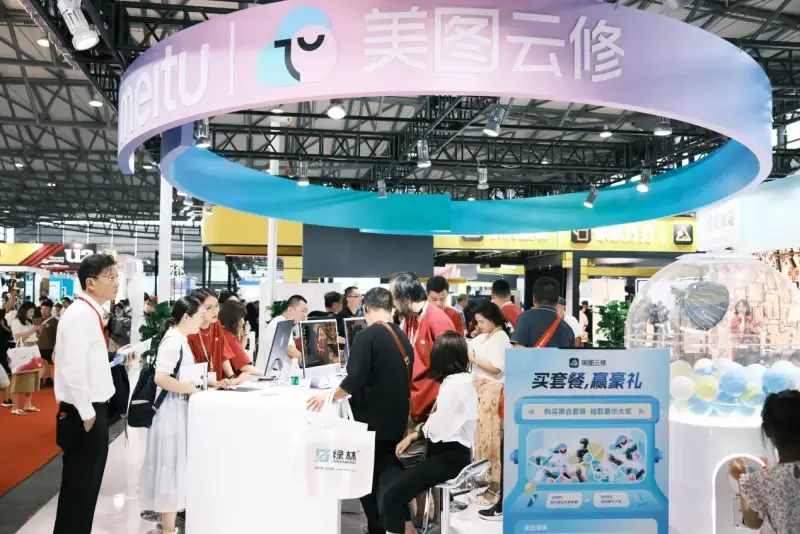
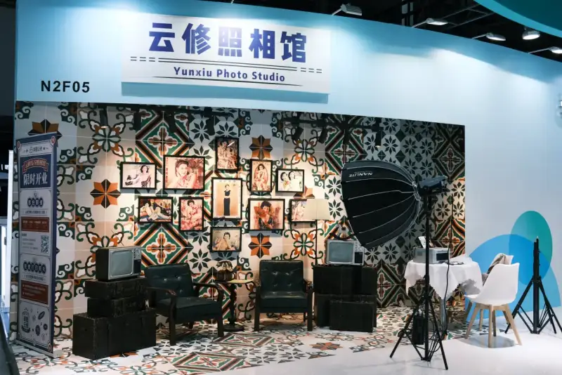
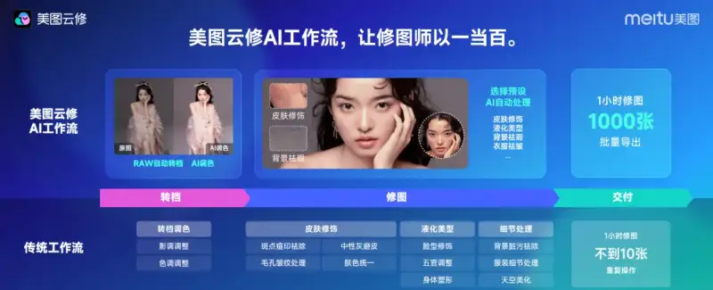
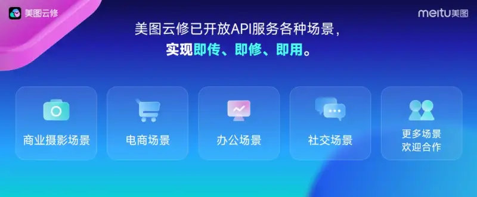

On August 7, at the 40th China Shanghai International Wedding Photo Equipment Exhibition, Meitu Cloud Retouch, which belongs to Meitu, showed the newly upgraded Meitu Cloud Retouch Pro. With new features such as AI batch color grading and AI batch retouching, it brings a more complete retouching solution to the commercial photography industry.

The show is hosted by the Shanghai Council for the Promotion of International Trade and the China Portrait Photography Society. At the booth, Meitu Cloud Retouch showed commercial features such as smart exposure, color transfer, wrinkle removal, and background replacement. Built on Meitu's AI models, Meitu Cloud Retouch can now color-grade a batch with one click. It broadly helps retouchers work faster.
Meitu Cloud Retouch also set up an immersive Cloud Retouch Photo Studio, where visitors could pick up free printed photos. Many visitors and partners stopped to try it.

A Meitu Cloud Retouch manager said the product is positioned as professional AI batch retouching software. Built around portrait post-processing, its AI workflow helps retouchers do the work of a hundred. It automates steps such as file conversion, retouching, and delivery.
For speed, Meitu Cloud Retouch handles professional fine retouching with ease, from skin blemishes to body shaping, background stains, and even clothing wrinkles. Retouchers can save their usual steps as presets, reuse them with one click, and output batches of photos. This fits the workflow of photo studios that process many photos. It can retouch 1,000 photos in one hour.

The data show that more than 30,000 commercial photo studios now use Meitu Cloud Retouch. It retouches more than 500 million photos a year. Fine-retouch speed is up 12 times, and stores earn on average more than 40 percent more from photo selection.
Meitu Cloud Retouch now offers a smart retouching API. In commercial photography, e-commerce, office, and social settings, it lets users upload, retouch, and use right away. Several photo live-streaming platforms now use the service. The AI batch retouching solution has been tested in the industry.

A chain of children's photo studios that used traditional retouching could process only about 60 photos per retoucher per day. After it used Meitu Cloud Retouch to retouch batches with presets, each person could process 3,000 photos a day. This was an efficient shift in its business model.
A photo team from Shanghai said it shoots 300 events a year. For an 8-hour off-line event, a single camera position needs about 300 quick retouches. The manual cost for one camera position is at least 200 yuan per event, which adds up to 60,000 yuan a year. After it used the Meitu Cloud Retouch AI solution, each photo cost only 0.16 yuan to retouch. The whole year cost about 15,000 yuan. The team saved nearly 45,000 yuan a year and gained in both speed and quality.
Wang Xin, an analyst who follows commercial photography, said AI automation can greatly speed up retouching. AI also applies a standard result, so the quality stays consistent. This meets the long-term need of commercial photography for high-quality output. As AI keeps improving, Meitu Cloud Retouch will push commercial post-processing toward greater speed and intelligence.